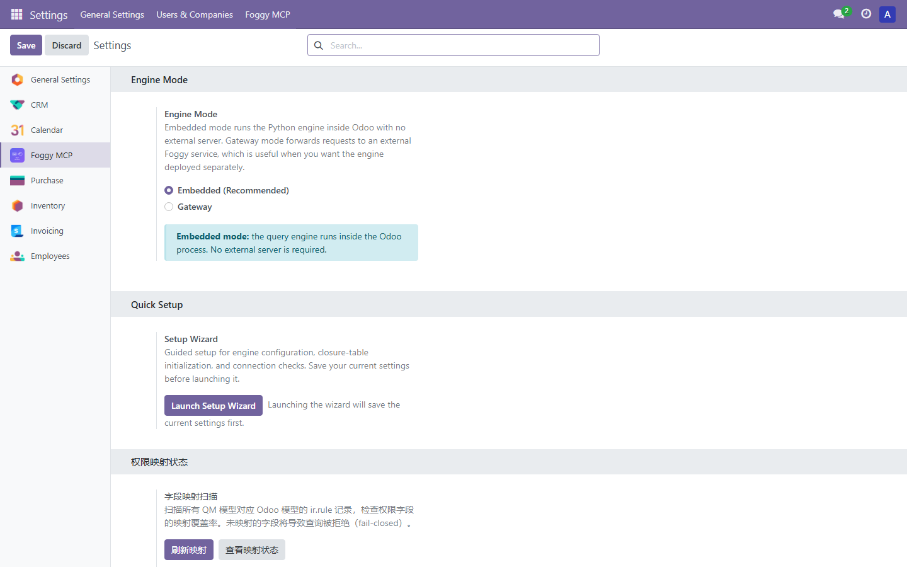
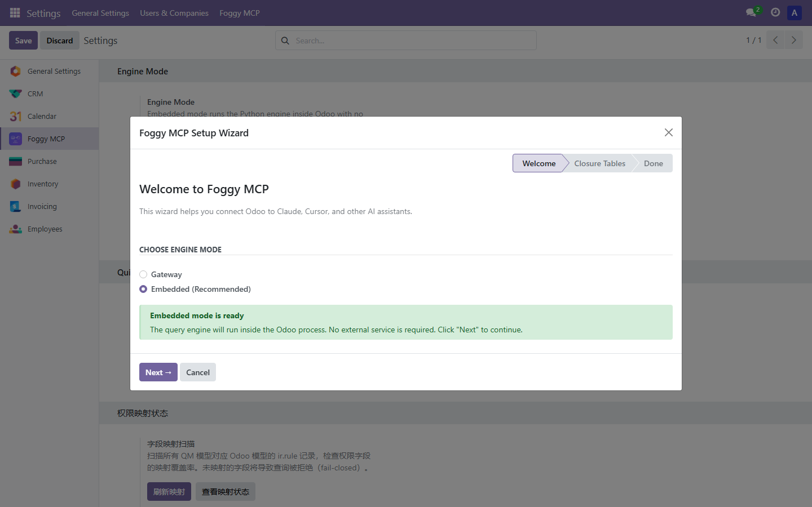
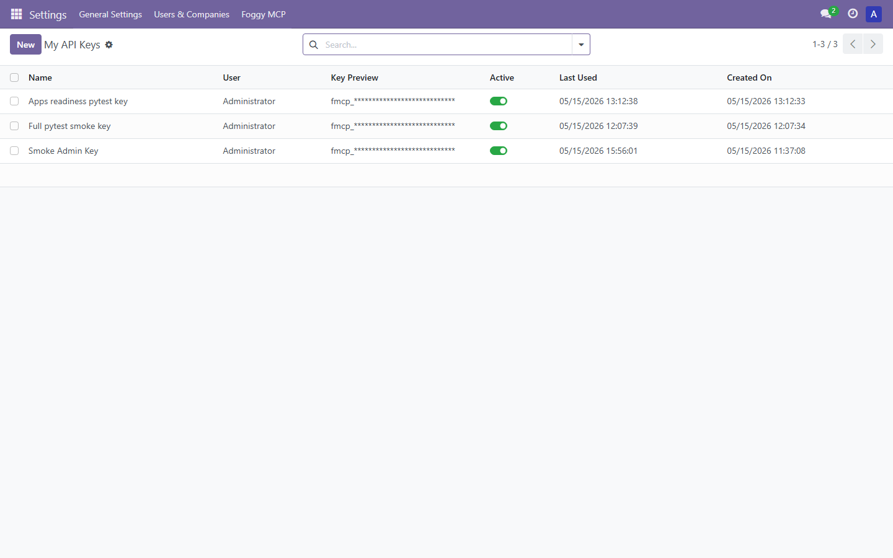

Foggy MCP Gateway is an Odoo addon that exposes permission-aware business data queries through the Model Context Protocol (MCP). It lets external MCP clients query approved Odoo data without giving those clients direct database access.
Community Edition is designed for personal users, developers, and lightweight technical evaluation. It focuses on the open query engine adoption path and keeps the Odoo runtime restrained: no built-in AI Chat, no commercial audit workflow, and no export or governance suite.
This release targets Odoo 17.0 and uses the odoo17 model namespace. The addon version follows the Odoo 17 series and is not a minimum Odoo server patch requirement.
Database support is currently scoped to PostgreSQL, the standard Odoo database backend. MySQL is not an officially supported target for this Odoo bridge release.
AI Client (Claude Desktop, Cursor, VS Code Copilot, etc.)
|
| MCP JSON-RPC
v
+------------------------------------------------+
| Odoo MCP Gateway + Embedded Foggy Engine | <-- Recommended
| API Key Auth + Odoo Permission Layer |
+------------------------------------------------+
|
| SQL (read-only)
v
+------------------------------------------------+
| PostgreSQL | <-- Your Odoo database
+------------------------------------------------+
Optional: Odoo MCP Gateway --HTTP--> self-hosted external Foggy service
The included Python engine can run inside the Odoo process for a simple Community setup. Advanced deployments can point the gateway at a self-hosted external Foggy service.
API keys are scoped to Odoo users. ir.model.access and ir.rule checks are evaluated server-side, then injected into every query so clients cannot bypass Odoo permissions.
Pre-built Community query models cover Sales, Purchases, Accounting, Inventory, Products, HR, Contacts, Companies, and CRM Leads for Odoo 17 evaluation scenarios.
| Feature | Description | Example |
|---|---|---|
| Dimensions & Captions | Query related entity names through caption fields | partner$caption, company$caption |
| Aggregations | SUM, COUNT, AVG, MIN, and MAX with grouped results | sum(amountTotal) as total |
| DISTINCT | Enumerate unique values for exploration | distinct: true, columns: ['state'] |
| Subtotals | Return subtotal and grand total rows | withSubtotals: true |
| Hierarchy Filters | Apply organization and company hierarchy filters | selfAndDescendantsOf, selfAndAncestorsOf |
| Slice Filters | Use server-side WHERE conditions with common operators | =, !=, >, like, in, isNotNull |
asyncpg, pydantic, and PyYAML.https://your-odoo.com/foggy-mcp/rpc.| Odoo App | Odoo Model | Query Model | Key Dimensions |
|---|---|---|---|
| Sales | sale.order | OdooSaleOrderQueryModel | partner, company, salesTeam, state |
| Sales | sale.order.line | OdooSaleOrderLineQueryModel | order, product, uom |
| Purchase | purchase.order | OdooPurchaseOrderQueryModel | partner, company, pickingType |
| Accounting | account.move | OdooAccountMoveQueryModel | partner, company, journal, moveType |
| Accounting | account.payment | OdooAccountPaymentQueryModel | partner, company, paymentType, state |
| Accounting | account.move.line | OdooAccountMoveLineQueryModel | move, account, partner, company |
| Inventory | stock.picking | OdooStockPickingQueryModel | partner, company, pickingType, source, destination |
| Inventory | product.template | OdooProductTemplateQueryModel | category, uom, company |
| Employees | hr.employee | OdooHrEmployeeQueryModel | department, company, job, workLocation |
| Contacts | res.partner | OdooResPartnerQueryModel | company, country, state, type |
| Companies | res.company | OdooResCompanyQueryModel | parent, country, currency |
| CRM | crm.lead | OdooCrmLeadQueryModel | stage, user, team, company |
The screenshots below are captured from a clean Community-only Odoo 17 runtime. They show the embedded engine setup, setup wizard, and API key management screens used by external MCP clients.



| Need | Community Edition | Commercial Edition |
|---|---|---|
| Personal Odoo MCP evaluation | Included | Included |
| Embedded local query engine | Included | Included |
| External MCP clients | Included | Included |
| Built-in AI Chat inside Odoo | Not included | Commercial capability |
| Export, audit, and governance workflows | Not included | Commercial capability |
| Production support and managed onboarding | Best-effort community maintenance | Commercial support path |
No third-party cloud calls are made by this addon. In embedded mode, query execution runs inside the Odoo process and reads the Odoo PostgreSQL database directly. In gateway mode, requests are forwarded only to the self-hosted Foggy service that you configure.
asyncpg, pydantic, PyYAMLNo. The embedded Python engine is the recommended Community setup.
Yes. Use gateway mode when you want an external service boundary that you operate yourself.
No. Community exposes MCP tools for external clients; in-Odoo chat is a commercial capability.
No. External clients and their provider settings are controlled outside this addon.
| Version | Notes |
|---|---|
| 17.0.1.5.0 | Odoo 17 namespace, embedded Community engine, 12 query models, API key gateway, and Odoo Apps readiness cleanup. |
Documentation and source code are included with the addon. Community maintenance is best-effort. The addon is distributed under Apache 2.0, represented in the Odoo manifest as Other OSI approved licence.
External MCP clients, infrastructure services, and AI providers remain subject to your own provider agreements and deployment choices.